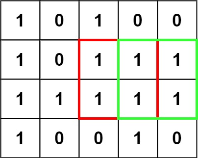
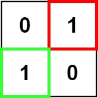

books / company-solutions / Array
221. 最大正方形
| 题目信息 | 内容 |
|---|---|
| 难度 | 中等 |
| 核心模式 | 二维 DP：以 (i,j) 为右下角的最大正方形边长 |
| 时间复杂度 | O(m·n) |
| 空间复杂度 | O(n) |
题目与约束
在一个由 '0' 和 '1' 组成的二维矩阵内，找到只包含 '1' 的最大正方形，并返回其面积。
示例 1：

<strong>输入：</strong>matrix = [["1","0","1","0","0"],["1","0","1","1","1"],["1","1","1","1","1"],["1","0","0","1","0"]]
<strong>输出：</strong>4
示例 2：

<strong>输入：</strong>matrix = [["0","1"],["1","0"]]
<strong>输出：</strong>1
示例 3：
<strong>输入：</strong>matrix = [["0"]]
<strong>输出：</strong>0
提示：
-
m == matrix.length -
n == matrix[i].length -
1 <= m, n <= 300 -
matrix[i][j]为'0'或'1'
核心不变量
dp[i][j]表示以(i,j)为右下角、且全部由'1'组成的最大正方形边长。
完整推导
思路推导
-
直觉与痛点：如果对每个
'1'都向四周暴力扩展检查正方形，最坏是 O((mn)·min(m,n))，太慢。我们希望复用"已经算过的较小正方形"的信息。 -
状态定义：设
dp[i][j]为以格子(i,j)作为右下角时，能构成的最大全'1'正方形边长。若matrix[i][j] == '0'，显然dp[i][j] = 0。 -
转移方程：若
matrix[i][j] == '1'，则dp[i][j] = min(dp[i-1][j], dp[i][j-1], dp[i-1][j-1]) + 1。 含义很直观：一个边长s的正方形要求它的上方、左方、左上三个方向都能撑起s-1的正方形，三者取最小再 +1。
小例子：某格子上方能撑 2、左方能撑 3、左上方能撑 2，则当前最多撑 min(2,3,2)+1 = 3。
- 答案：遍历过程中记录最大的
dp值maxSide，最终面积就是maxSide * maxSide。
Java 实现（滚动一维 DP）
class Solution {
public int maximalSquare(char[][] matrix) {
int m = matrix.length, n = matrix[0].length;
int[] dp = new int[n + 1]; // dp[j] 等价于 dp[i][j]
int maxSide = 0;
for (int i = 1; i <= m; i++) {
int diagonal = 0; // 保存 dp[i-1][j-1]
for (int j = 1; j <= n; j++) {
int up = dp[j]; // 覆盖前的 dp[j] 就是 dp[i-1][j]
if (matrix[i - 1][j - 1] == '1') {
dp[j] = Math.min(Math.min(up, dp[j - 1]), diagonal) + 1;
maxSide = Math.max(maxSide, dp[j]);
} else {
dp[j] = 0; // 该格为 '0'，不能作为正方形右下角
}
diagonal = up; // 为下一列准备 dp[i-1][j-1]
}
}
return maxSide * maxSide;
}
}
复杂度
- 时间：O(m·n)，每个格子只做常数次比较。
- 空间：O(n)，滚动一维数组；若不优化则为 O(m·n)。
易错点与扩展（面试高频考点）
- 返回的是面积不是边长：题目要面积，记得
maxSide * maxSide。 - 一维滚动时
diagonal的更新时机：必须在用up覆盖dp[j]前把旧的dp[j]（即dp[i-1][j]）存进up，循环末尾再把它赋给diagonal供下一列使用，顺序错了就会用到被污染的值。 - 字符是
'0'/'1'不是数字：比较要用== '1'，别写成== 1。 - 初值：
dp多开一列（下标 0 处恒为 0）作为哨兵，避免处理边界。 - 扩展：本题求最大正方形；若改成"最大矩形"，则需要对每一行做柱状图 + 单调栈（LeetCode 85）。
力扣原题
C++ 实现
#include <vector>
#include <algorithm>
using namespace std;
class Solution {
public:
int maximalSquare(vector<vector<char>>& matrix) {
int m = matrix.size(), n = matrix[0].size();
vector<int> dp(n + 1, 0);
int maxSide = 0;
for (int i = 1; i <= m; i++) {
int diagonal = 0;
for (int j = 1; j <= n; j++) {
int up = dp[j];
if (matrix[i - 1][j - 1] == '1') {
dp[j] = min(min(up, dp[j - 1]), diagonal) + 1;
maxSide = max(maxSide, dp[j]);
} else {
dp[j] = 0;
}
diagonal = up;
}
}
return maxSide * maxSide;
}
};
Python 实现
class Solution:
def maximalSquare(self, matrix: list[list[str]]) -> int:
m, n = len(matrix), len(matrix[0])
dp = [0] * (n + 1)
max_side = 0
for i in range(1, m + 1):
diagonal = 0 # dp[i-1][j-1]
for j in range(1, n + 1):
up = dp[j] # 覆盖前即 dp[i-1][j]
if matrix[i - 1][j - 1] == '1':
dp[j] = min(up, dp[j - 1], diagonal) + 1
max_side = max(max_side, dp[j])
else:
dp[j] = 0
diagonal = up
return max_side * max_side